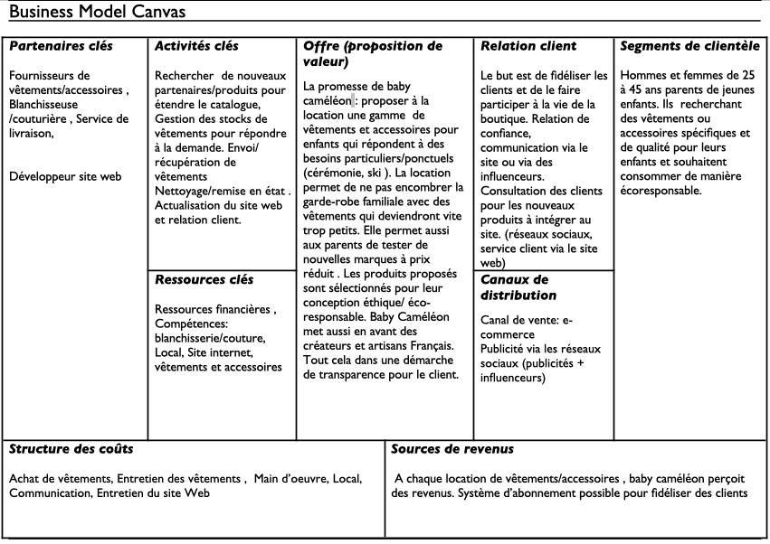
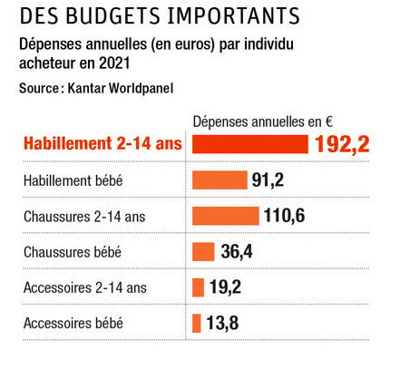
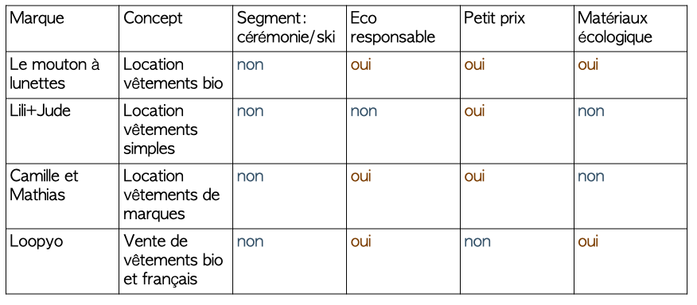
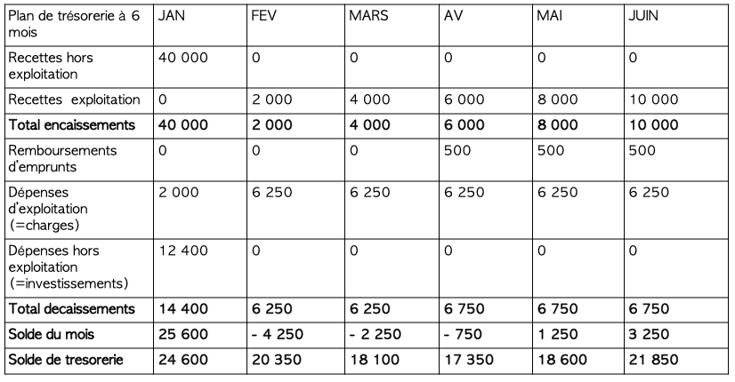
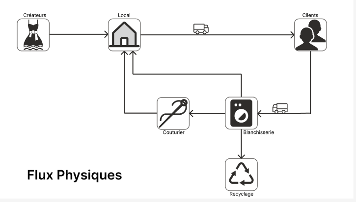
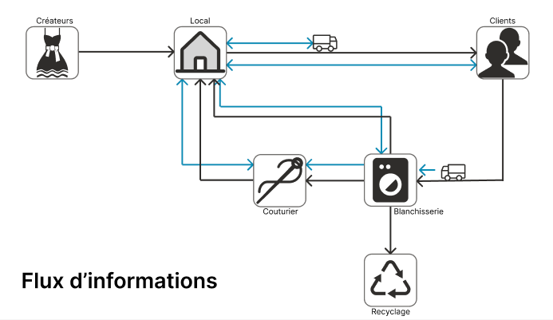
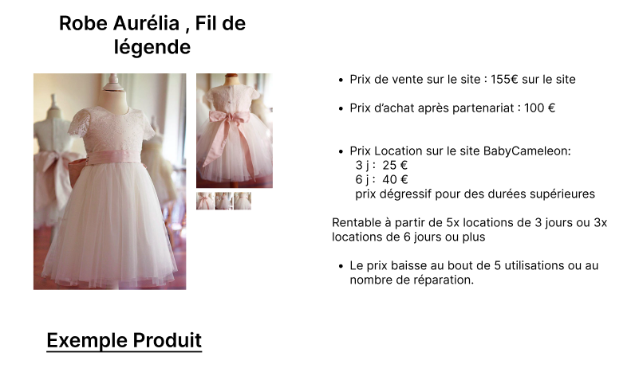
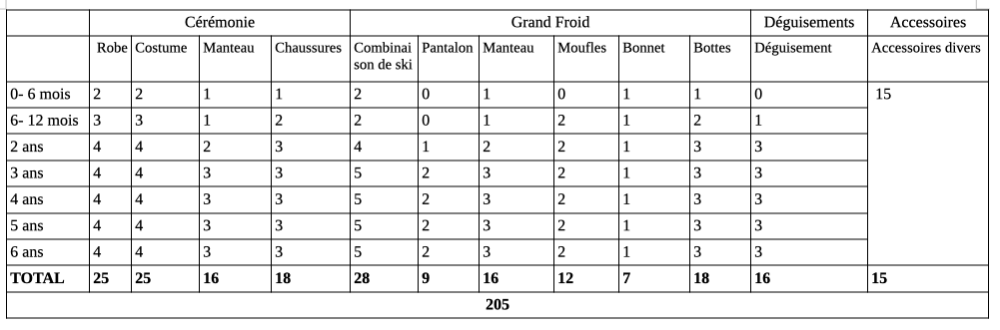
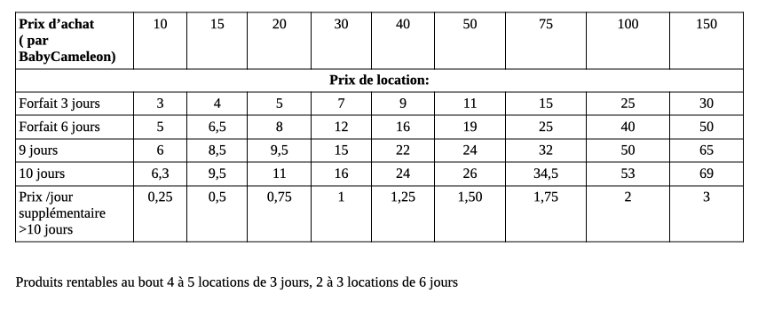

POK 3: BabyCameleon, Business Plan et modélisation Logistique
- POK
- 2022-2023
- temps 3
- gestion de projet
- business plan
- logistique
- entreprenariat
- Louise Gacoin
Le but de ce POK est de continuer mon projet du POK 2 (BabyCameleon). Pour cela je vais m'intéresser aux enjeux économiques et logistiques du projet.
Sommaire
- Business Model
- Business Plan
- Les partenaires
- Stratégie Supply chain
Liste des sprints: SPRINT 1:
- Business Model (réalisé)
- Business Plan (réalisé)
- Partenaires (réalisé)
SPRINT 2:
- Stragtégie Supply Chain (Commencé au sprint 1, réalisé)
1.Business Model
Un business model décrit la logique de fonctionnement du projet, comment l’entreprise va créer de la valeur. Ici on s’asssure du bien fondé de l’entreprise et convaincre les investisseurs de la viabilité du projet.
Voir le MON de Gabriel sur le sujet
On utilise le business model canva :
2. Business Plan
Le business plan est un document qui détail l'objectif du projet et le plan financier sur les premières années. Il est en général présenté aux investisseurs afin de les convaincre d'investir dans le projet. Il permet de:
- Comprendre rapidement de quoi il s'agit, à quel besoin répond le service proposé,
- Connaitre les personnes à l'origine du projet avec leurs motivations,
- Evaluer la valeur et le sérieux de la préparation du projet,
Le business plan contient le business model.
Pour réaliser le mien, je me suis aidé de ces sites:
Sources
Mon Businnes Plan est plus court qu'un Business Plan classique mais il en contient toutes les parties. Je me suis mise en mode role play pour le concevoir (même si j'ai peut-être un peu enjolivé la réalité sur certains points)
Executive summary:
Nos enfants grandissent vite, mais pas leurs habits. En tant que parents, on se retrouve donc à acheter des vêtements qui ne seront porté que quelque fois avant de devenir trop petits. Ce gaspillage est d'autant plus flagrant lorsqu'il s'agit d'habiller nos enfants pour des occasions spéciales telles qu'un marriage ou des vacances au ski. BabyCameleon, c'est une boutique en ligne qui vous permet de louer des vêtements et accessoires pour enfants de 0 à 6 ans. Les pièces proposées correspondent à tout type de besoins spécifiques: vêtements de cérémonie, d'hiver, déguisements et accessoires pour les vacances. Les produits que nous proposons sont éco-responsables et soutiennent l'artisanat locale grâce à une sélection de vêtement créés en France . Notre offre à la carte vous permet de choisir quand recevoir vos articles et pour combien de temps. Notre objectif est aussi de créer une vraie communauté en impliquant les clients dans le choix des pièces disonibles à la location parexemple.
Le porteur du projet :
La porteuse du projet est une jeune ingénieure bientôt diplômée de Centrale Marseille. Engagée dans la lutte pour le climat, elle veut mener un projet qui lui permette d’agir à son échelle. Elle a déjà participé à plusieurs Hackathon et connaît la démarche entrepreneuriale. Elle possède de solides bases en développement informatique et en Web design qui l’aideront à concevoir un site adapté au projet. Elle est aussi entourée d’un réseau d’entrepreneurs (les Entrep’) qui l’aide à améliorer sans cesse son projet. Elle bénéficie aussi du soutien de ses professeurs et camarades prêts à l’aider à développer les compétences nécessaires à ce projet (logistique notamment).
Présentation générale du projet :
BabyCaméléon est une boutique en ligne qui permet aux parents de louer des vêtements et accessoires pour enfants de 0 à 6 ans qui répondent à des besoins spécifiques ou ponctuels.
Sachant qu’un enfant grandit d’au moins 5cm par an les première années il faut sans cesse renouveler sa garde robe. De plus en plus d’offres de location de vêtements enfants voient donc le jour. BabyCaméléon se démarque par le segment de vêtements et accessoires proposés. En effet nous proposons des produits adaptés aux événements ponctuels: cérémonies, au ski, au soirées déguisées ainsi qu’aux vacances d’été et d’hiver.
La location permet aux familles d’accéder des pièces de qualité à prix réduit. Les clients économisent ainsi de l’argent sans encombrer leurs placards. Cela peut aussi être l’occasion d’essayer des pièces en conditions réelles avant de les acheter.
De plus, BabyCaméléon s’inscrit dans une démarche éthique et eco-responsable. En effet, les vêtements proposés sont principalement issus de créateurs français, favorisant les circuits courts ainsi que l’artisanat. Les matériaux utilisés sont nobles tel que le coton bio et recyclés. Dans une démarche de transparence chaque pièce sera authentifiée grâce à des vignettes (selon les matériaux utilisés, le mode de fabrication…).
La location permet aussi d’éviter le gaspillage et de donner plusieurs vies à chaque pièces. Sachant que l’industrie textile est l’une des industries les plus polluantes au monde, chaque fois qu’un vêtements est loué, on évite une nouvelle fabrication.
BabyCaméléon sera d’abord une boutique virtuelle avec possibilités d’ouverture de boutiques physiques à long terme. Elle promet d’être pratique pour les parents qui recevrons et rendrons leurs produits depuis chez eux.
Le nettoyage et la maintenance des produits sera prise en charge par BabyCaméléon et effectuée par des professionnels.
Partie économique du business plan :
- produit/service :
Les produits loués seront les suivants : • vêtements de cérémonie ( costumes, robes, manteaux, chapeaux, chaussures) • vêtements de ski ( combinaisons, manteaux, gants, bonnets ) • déguisements et chaussures • accessoires ( duvette, sac à langer, matelas/lit de voyage, baignoire nomade…)
- Etude de marché :
Contexte: En France,le marché de l’habit enfants représente 5 milliards d’euros de chiffre d’affaire chaque année.  Le marché des vêtements enfants s'impose de lui-même, puisque les parents sont obligés de s'adapter à la croissance de leurs enfants et donc de renouveler plus fréquemment les vêtements. La taille du marché est fluctuante, suivant une baisse globale induite par la diminution du taux de natalité en France. C’est un marché très concurrentiel. Le marché de l'occasion est en plein essor sur ce segment, car la perception des articles résiliés a changé dans l'opinion des clients. L'attention portée à la durabilité, à l'éthique et à l'environnement a révolutionné la façon dont les clients perçoivent et choisissent les marques : l'industrie de la mode a donc évolué ces dernières années pour s'adapter à la nouvelle tendance durable.
Tendances du marché :
- Mode Eco responsable, durable
- Qualité (des matériaux)
- Seconde Main
- Prix raisonnables
Globalement, les consommateurs ne veulent pas acheter des produits trop chers car ils savent qu'il va falloir renouveler le stock très souvent. En outre, il n'en reste pas moins qu'il existe une certaine exigence sur la qualité des produits, avec une tendance bio qui fait clairement son apparition dans les moeurs.
Concurrence:
On observe que les sites proposant la location proposent aussi souvent la vente. Les pièces proposées sont simples, surement ce qui permet d’avoir des prix très bas. (environ 5€/moi la pièce). La provenance n’est pas indiquée.
Sources
Nos avantages concurrentiel : Segment de produits unique : vêtements de cérémonie, ski et déguisements et accessoires de vacances Une offre sur mesure : le large choix de modèles (et de prix) avec des pièces plus simples et d’autres de créateurs. Choix exactes de la durée de location (avec une location à la journée et programmable dans le futur)
- Plan d’action sur 3 ans : Année 1 : Recherche de partenaires financiers Recherche de premiers partenaires/ créateurs de vêtements et accessoirs Recherche d’un local Recherche d’un partenaire blanchisserie, couture proche du local création du site web (externalisé) Promotion par des influenceurs
Année 2 : Ouverture de la boutique Développement des partenariats avec des créateurs Français Embauche de personnel pour gérer les commandes Investissement dans des pubs (Google Ads, Facebook Ads) Travail e référencement auprès des moteurs de recherche (SEO)
Année 3 : Etude de marché afin d’éventuellement ouvrir une boutique physique Etude de marché afin d’éventuellement créer nos propres vêtements Développement des partenariats avec des créateurs Français (selon suggestions de nos clients)
- Stratégie marketing: la stratégie pour attirer et fidéliser la clientèle:
• Feedback : Nous allons constamment interroger nos clients sur la qualité du service mais aussi sur les nouveauté qu’ils souhaiteraient voir dans la boutiques • SEO : Nous allons travaillé notre stratégie de référencement afin d’avoir du trafic sur notre site • Pricing : Nous allons offrir une large gamme de prix en fonction de la provenance mais aussi du nombre d’utilisation du produit. Cela nous permettra de toucher un large public • Marketing Digital : utilisation des réseaux sociaux et partenariats avec des influenceuses. Publicités via googleAds et FacebookAds
- Gestion des risques:

Partie financière du business plan:
L'entreprise sera dans un premier temps gérée par moi seule. Elle sera financée de cette manière: 10 000 € d'apport personnel de capital 30 000 € de prêt
Pour fonctionner il faudra un local et un site internet. La création du site web sera externalisée Voici un tableau qui récapitule les différents investissements de départ ainsi que les différentes charges

Je n’ai pas inclus de dotation aux amortissements dans mes bilan. Le fait que les habits s’abiment est pris en compte dans les 500€ mensuels dédiés au rachat de nouvelles pièces.
nettoyage+réparation : environ 4€/pièce en considérant que chaque pièce est louée pour 3 jours consécutifs (en moyenne). Cela donne environ 2000€ par mois. On a considéré que 50 pièces seraient louées chaque jour.
envoi et retour : payés par le consommateur
- Bilan prévisionnel :

-
Chiffre d'affaires prévisionnel : Equivalent de 50 pièces/jours louées, à environ 8 euros la journée CA mensuel de 50 x 31 x 8= 12 400 € CA annuel prévu de 12 400 x 12= 148 800 €
-
Résultat prévisionnel :
-
Plan de trésorerie: 
-
seuil de rentabilité :
Partie juridique du business plan
Le type d'entreprise créée sera une entreprise individuelle: une EURL(entreprise unipersonnelle à responsabilité limitée) car elle est facile à créer. De plus, le patrimoine de l'entreprise le patrimoine personnel sont divisés et seuls les biens utiles à l'activité professionnelle pourront être saisi par les créanciers professionnels. Cette structure permet de limiter les responsabilité sur les apports et envisager l'entrée de nouveaux associés. En contrepartie il faut se soumettre au formalisme lié à la constitution et au fonctionnement d'une société.
3. Les Partenaires
Les partenariats sont un point clés de notre entreprise. Le but est de pouvoir créer des partenariats long terme assurant la qualité de nos services . Pour cela il faudra réaliser un vrai travail en amont pour rechercher les partenaires potentiels. Il faut que les partenaires partagent les valeurs de BabyCaméléon (à savoir : être soucieux de l’environnement et de la qualité des services proposés aux clients. Vouloir encourager l’économie locale). Ces points communs nous permettront d’établir des partenariats durables. Ces partenariats vont aussi demander du temps et de l’investissement de ma part : il faut créer une vraie relation de confiance avec les partenaires et participer à la vie de leur entreprise ( évènements et autres…)
Les différents partenariats: Pour les créateurs/boutiques de vêtements et accessoires Le but pour BabyCaméléon : Obtenir des produits à mettre en location à prix réduits (voire gratuit?) et qui correspondent aux critères de la boutique ( fabriqués en France ou en Europe, matières écologiques...) Le choix des partenaires : Petits créateurs indépendants (et Marques françaises) ciblés. Attention particulière sur les politiques RSE et l’eco responsabilité des partenaires choisis Bénéfices pour les partenaires:
- Visibilité: mise en avant sur le site web avec une page dédiée à chaque partenaires +lien vers leur boutique + description de leur marque en dessous de leur produis. Mise en avant via des publications sur les réseaux sociaux. La communication de BabyCameleon se veut transparente. Dans ce sens on peut imaginer des insight dans nos processus qui mettent en avant le travail des créateurs.
- Partenariat longue durée avec des rachats à fréquence établie.
- Possibilités d’avoir un pourcentage sur la location de leur articles (suivant le type de réduction accordé)
- Diversification de leur offre avec de la location. BabyCaméléon ne fait que de la location. Nous ne sommes donc pas en concurrence directe avec les marques et site qui vendent des vêtements. De plus la location permettra aux foyers plus modestes de tester les marques ( elles toucheront donc un public plus large).
Pour nos Blanchisseuse et couturière : Le but pour BabyCaméléon : Obtenir des services de nettoyage et remise en état de qualité, à prix réduit. Le choix des partenaires : Dans un souci de praticité et de réduction des trajets inutiles, il faudra trouver des artisans proches géographiquement du Local de BabyCaméléon. Les partenaires seront des professionnels soucieux du travail bien fait. Bénéfices pour les partenaires:
- Visibilité: mise en avant sur le site web avec une page dédiée à chaque partenaires. Mise en avant de leur travail via des publications sur les réseaux sociaux.
- Partenariat longue durée avec du travail chaque mois
Pour un service de livraison :
Le but pour BabyCaméléon :
Obtenir un service de confiance pour la livraison/ récupération des pièces à prix raisonnables pour le client. Pour rappel les expéditions seront payés par client. La rapidité du service de livraison est cruciale pour notre entreprise car elle va conditionner notre business. Plus les livraisons seront rapides, plus nous pourront louer nos pièces.
Pour rappel, BabyCameleon doit pouvoir servir le France entière (Le mode de transport privilégié sera donc le camion).
Le choix des partenaires :
La rapidité est le critère n°1. Une grande attention sera aussi accordée aux valeurs et à l’éthique du service. En effet la marque se veut éco responsable donc doit trouver un service de livraison en conséquences.
Bénéfices pour les partenaires:
- Partenariat longue durée avec de nombreuses expéditions chaque mois.
- Visibilité: mise en avant sur le site web avec une page dédiée à chaque partenaires. Mise en avant de leur travail via des publications sur les réseaux sociaux.
Sources
4. Stratégie Supply chain
Maintenant que nous avons définit nos partenariats, il faut s’attaquer à la logistique de l’entreprise. La Supply Chain est l’ensemble des activités entre l’achat des matières 1ere et la livraison au client. Comme BabyCameleon fait de la location, la chaine d’approvisionnement diffère un peu des chaines classiques et se doit d’être réactive afin de satisfaire les clients . Une modélisation des flux nous permet d’éclairer le sujet :
Lorsque l’article est renvoyé, il passe par la case nettoyage. Ensuite, il y a 3 cas de figures :
- le vêtement n’est plus utilisable car trop abimé. Il sera recyclé
- le vêtement nécessite des réparations. Il passe alors par la case couturier
- tout va bien. Le vêtement est renvoyé au local.
Ce genre d’échange nécessite une communication efficace et rapide avec les partenaires. Voici les différents flux d’informations :
Les défis de cette chaine d’approvisionnement sont les suivants : 1. Optimiser le réseau de points de stockage 2. Gérer le stock ainsi que l’emplacement des produits dans les différents points de stockage 3. Optimiser l’utilisation du stock 4. Maximiser les profits et minimiser les couts 5. Garantir la bonne disponibilité des produits pour les clients
Il faut des points de stockages stratégiques. Je suis partie de l’hypothèse d’un seul point de stockage pour éviter de compliquer la gestion des stocks. La localisation de ce local est cruciale : il faut qu’il soit proche des partenaires (blanchisserie et couturier ) mais aussi dans un endroit stratégique pour desservir la France entière. Cette hypothèse sous entend plus de contraintes dans le transport. Notamment en terme de temps et coût. Un envoi rapide coutera plus cher mais immobilisera la pièce moins longtemps. J’ai du mal à bien me projeter sur ce point. A mon avis cela dépendra beaucoup du partenariat obtenu avec le transporteur.
Le processus de location :
Un client commande un article pour une date donnée dd/mm/aa et pour un nombre de jours n donnés. L’article est envoyé par BabyCameleon le dd-1/mm /aa. Il est ensuite renvoyé par le client et immobilisé 3 jours pour le transport, le lavage et les éventuelles réparations avant de retourner au local. Ce temps d’immobilisation pourra être optimisé au fur et à mesure. On a donc un total de 4 jours entre 2 locations du même produit. Pour rester rentable, les articles devront être loués pour 2 ou 3 jours minimum.
Le prix de location doit s’adapter à toutes ces composantes, on peut imaginer que le prix/jour loué diminue plus on loue longtemps. Pour régler ce problème, on peut aussi faire comme dans l’étude de cas (voir plus bas) donner des options de location : par exemple 3 ou 6 jours et à la carte pour une durée >6 jours.
L’article est renvoyé directement au blanchisseur par le transporteur. Ensuite il passera par la case réparation si besoin. Les trajets entre le blanchisseur, le couturier et le local seront assurés par BabyCameleon dans un premier temps.
Comparaison avec 2 supply chain existantes :
Monsieur Magnani m’a fourni une étude de cas qui explique comment 2 entreprises de location de vêtements ont su s’imposer sur leur marché. Cette étude va surement nous permettre de tirer des enseignements qui s’appliquent à Baby Cameleon.
cas 1 : RTR
La première entreprise étudiée est RTR ( Rent The Runway), boutique américaine de location de vêtements . RTR possède un site web ainsi que des boutiques réelles. Il propose plusieurs types d’offres : un location à la journée et un abonnement. Le cout de la livraison est pris en charge par l’entreprise. RTR a débuté en sous traitant la plupart de ses activité : stockage des marchandises, livraison, nettoyage… L’entreprise, victime de son succès a grandit très vite et a du revoir son modèle d’approvisionnement. Ses multiples sous traitances sont devenues inefficaces lorsque l’entreprise a atteint une certaine taille. Les contacts en face à face avec les partenaires étaient trop peu nombreux pour garantir une bonne circulation de l’information. De plus RTR n’avait aucun contrôle sur la qualité des services fournis par ses partenaires. Un manque de contrôle qui conduisait à une baisse de qualité des services de RTR et un baisse de satisfaction des clients. RTR a donc décidé de gérer elle même l’entrepôt de stockage des produits. ⇒ Enseignements : Il ne faut pas hésiter à réévaluer sa stratégie en fonction de l’évolution de l’entreprise. Par exemple si BabyCaméléon grandit on pourrait envisager d’internaliser le nettoyage des vêtements. Nous sommes une entreprise de service . Le niveau du service est donc primordial. Il faut veiller à garder une bonne relation avec nos partenaires tout en contrôlant la qualité de leurs services.
Un autre point important mentionné dans ce cas est la bonne utilisation des données On peut utiliser les données des utilisateurs pour leur proposer des produits adaptés à leur besoins mais aussi prévoir nos besoins en stock. Enfin pour faire face à la saisonnalité du stock, RTR a mis en place un format de location « illimité » ou les clients louent pour une durée indéterminée.
cas 2 : Meliziu
Meliziu est une entreprise chinoise de location de vêtements haut de gamme. Elle a fait face à des débuts difficiles, avec une acceptation des clients faible pour le concept. Elle a donc du réduire ses coûts au maximum en sous traitant un maximum de taches. Elle a aussi permis aux clients de mettre en location leurs propre vêtements. Cette idée leur permet de diversifier l’ offre à moindre couts .
En conclusion de ces 2 études, la stratégie d ‘approvisionnement dépend surtout de la taille de l’entreprise. Sous traiter le stockage de ses articles fait sens pour une petite entreprise. Même si ce n’est pas l’idée qui a été retenue, elle reste à étudier. Les partenaires sont cruciaux dans le bon développement de notre entreprise, beaucoup de conflits peuvent apparaître à mesure que la charge de travail augmente.
La gestion des stocks:
Sources
Dans une entreprise de location, il ne s’agit pas de maximiser le nombre d’unités vendues mais leur taux d’utilisation. On veut que les articles soient loués le plus de temps possible. Le local : La capacités de stockage est impactée par le local : taille/ disposition… Il faut ensuite organiser l’espace et grouper le rangement par catégorie de produit par exemple. On veut conserver la qualité de nos articles, ils doivent donc être gardés dans les meilleures conditions possibles. (par exemple dans des sacs spéciaux.)
Je suis partie sur un stock de base de 200 pièces, une fois ce stock obtenu il faudra utiliser un logiciel de gestion des stocks pour savoir quand il est disponible/ A envoyer… Le management ou contrôle du stock nous permettra d’obtenir des informations et de nous adapter ( par exemple acheter en double les articles très sollicités.) On peut aussi imaginer ajouter un bouton sur le site : « j’aurais voulu louer cet article mais il n’est pas disponible ». Ensuite, il faut prévoir un temps d’immobilisation après chaque location pour effectuer la maintenance des articles : le lavage et les éventuelles réparations. Je suis partie du principe que cela représentait 2 jours (hors livraison). Collecter des informations sur ces phases au fur et a mesure permettra d’augmenter notre réactivité.
Prédire la demande est très important dans le dimensionnement d’un stock. Logiquement, lors d’un pic de demande on augmente les stocks et on les diminue lorsque la demande baisse. Malheureusement vu le segment de produit de Baby Caméléon, c’est compliqué. Les produits sont saisonniers. On pourrait prévoir des ventes saisonnière pour se « débarrasser » des articles déjà trop utilisés (une à la fin de la saison été pour les vêtements de cérémonie et une à la fin de l’hiver pour les vêtements de ski) ou recycler ceux qui sont déjà réparés et ainsi libérer de l’espace . Pour choisir quel article vendre ou recycler il faudra mettre en place des indicateurs d’usure. Ensuite reconnaitre et étudier les articles les plus profitables pourra nous permettre d’adapter nos stocks aux préférences clients. Enfin il faut prendre en considération la durabilité des produits. Le plus longtemps il peut circuler, plus il générera de profits. Un Audit régulier des stocks nous permettra aussi de garder la trace exact de nos articles.
Mes KPI:
Pour suivre l’évolution du business et permettre une amélioration continue de l’entreprise il faut suivre certains indicateurs clés :
- Nombre de location (total ou par article)
- Marge générée par un article (= revenu généré par l’article/(cout d’achat +cout de maintenance) )
- Taux d’utilisation d’un article (= nb jours loués/ nb de jours de location potentiel)
- Durée de vie d’un produit
- Nombres de réparations sur le produit
- Fragilité de l’article (= nombre de location du produit/ nombre de réparations sur le produit)
- Age moyen de l’inventaire
- Taux de renouvellement de l’inventaire, mensuel ou annuel ( Nouvel équipement/ (Ancien équipement + Nouvel équipement - équipement vendu) Ces indicateurs nous permettront de déterminer les articles les plus profitables et donc d’affiner le choix de nos pièces et leur nombre . Ils permettront aussi d’estimer quand remplacer certains produits.
De nombreux indicateurs sur le coût de l’inventaire pourront aussi être utiles :
- Cout de l’inventaire
- Cout du stockage
- Cout d’indisponibilité ( cout des locations perdues à cause de l’indisponibilité des produits)
- Cout de transport
- Taux maintenance sur revenu (=revenu total généré par le produit/ cout de maintenance)
Des outils de BI (comme PowerBi par exemple) nous permettrons de suivre ces indicateurs et d'améliorer l'effcicacité de l'entreprise.
Exemple Produit
J'ai indiqué une baisse du prix après un certain nombre de réparation ou utilisation. Je ne suis pas encore sûre de comment mettre en place ce système. Cependant je pense qu'on pourrait louer à des prix réduits les pièces un peu plus usées (cela permettra de diversifier l'offre).
Voici une constitution type pour mon stock de départ:
J'ai essayé de faire un stock équilibré et logique. Par exemple moins de pièces en grand froid pour les plus jeunes car on peut supposer que les parents évitent les vacances au skii avec les tout petits.
Voici un tableau type pourles prix de location des produits:
Attention, le prix d'achat indiqué est celui de notre entreprise. Il sera surement différent des prix de base affichés par les vendeurs de vêtements car pour rappel le but est de faire des partenariats avec les vendeurs (et ainsi obtenir des réductions).
Conclusion :
L’étude de la logistique de projet m’a fait réaliser que je devais revoir ma politique de prix. Au lieu de louer à la journée, il y aura plusieurs options : 3 jours, 6jours ou à la carte pour des durées plus longues. On pourra alors adapter les prix à ces forfaits et faciliter la planification. J’ai aussi reconsidéré le partenariat avec le transporteur qui sera crucial pour assurer l’efficacité du business. Ce projet me semble bel et bien viable. Il faudra bien étudier les produits en amont de la consititution des stocks mais aussi bien suivre les indicateurs afin d'améliorer en continu l'entreprise et sa rentabilité. Pour ce faire il faudra aussi bien travailler la relation cient en donnant la possibilité à ces derniers de donner leur avis sur la qualité des services et les produits qu'ils désirent voir sur notre catalogue.